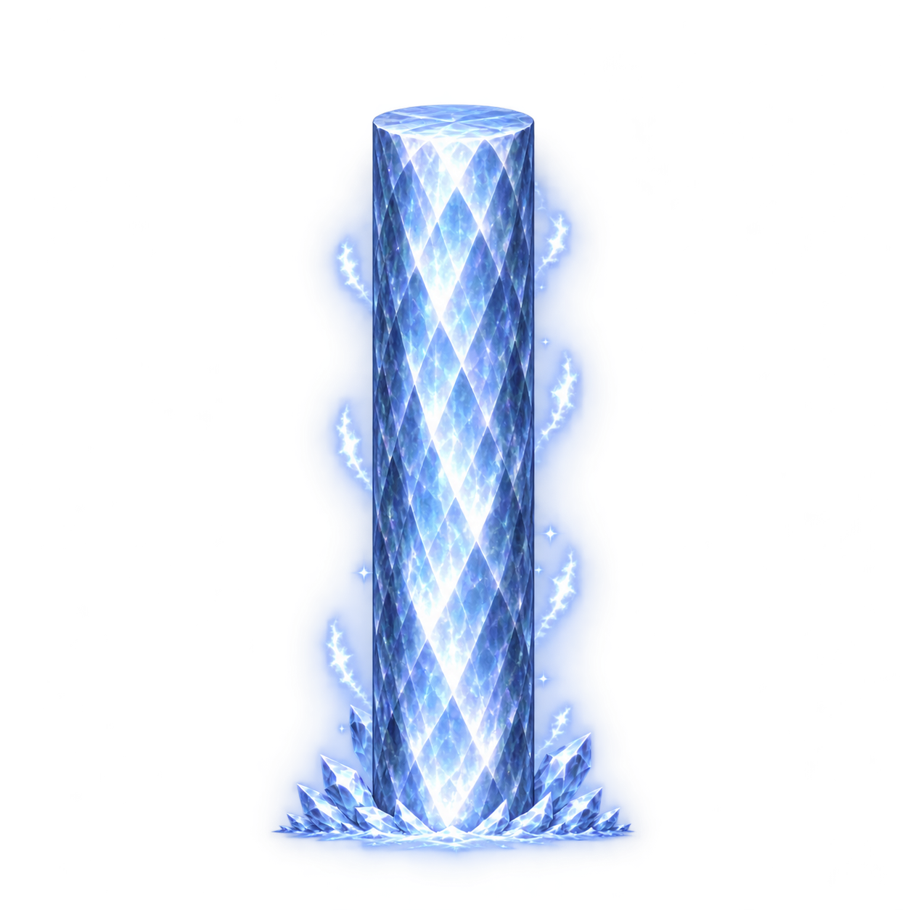

기존 디자인을 참조한 완성 프레임 시안. 사각 테두리가 512×512 셀이고 +는 Center Pivot 예정 위치입니다. 브라우저 배율 100% 기준.

원본 파일은 1254×1254이며 여기서는 512×512로 표시합니다. 최종 512 PNG나 Unity 임포트 검증은 아닙니다. 생성된 기둥은 정확한 2배 비율과 동일 폭이 확정된 상태가 아닙니다.
기존 256 프레임의 기둥은 대략 폭80×높이195 픽셀입니다. 폭80×높이390으로 연장하면 512 셀에 들어가지만, 폭 방향 픽셀 수가 2배가 되는 것은 아닙니다. 기존 폭의 픽셀 밀도까지 2배로 만들면 약160×780이 필요해 512 셀 높이를 초과합니다.